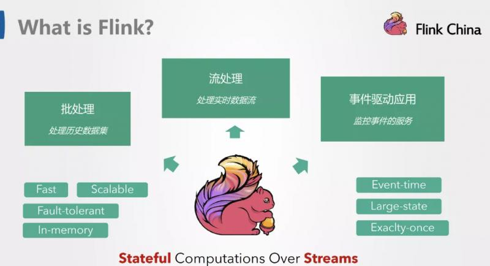
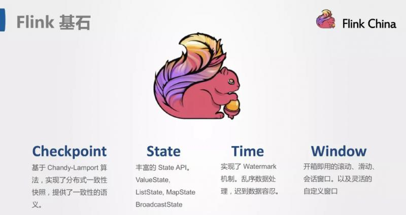
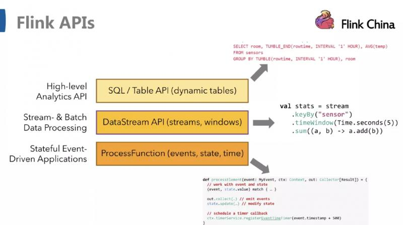
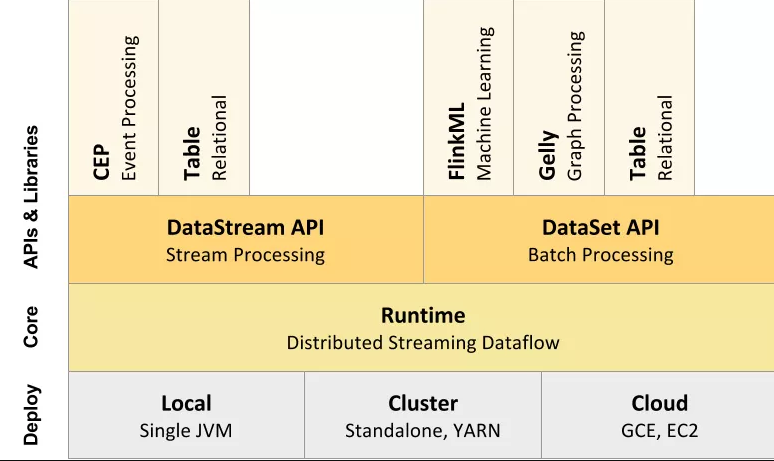
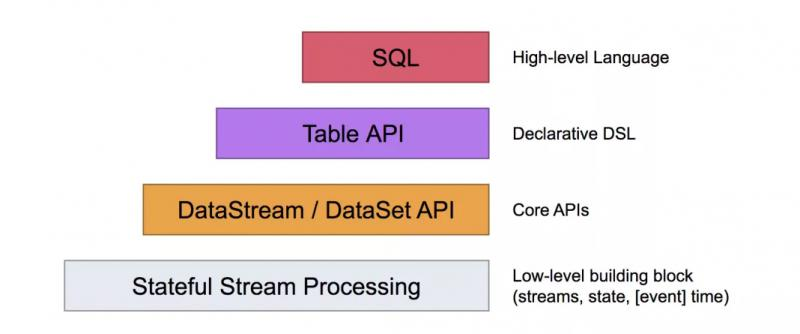
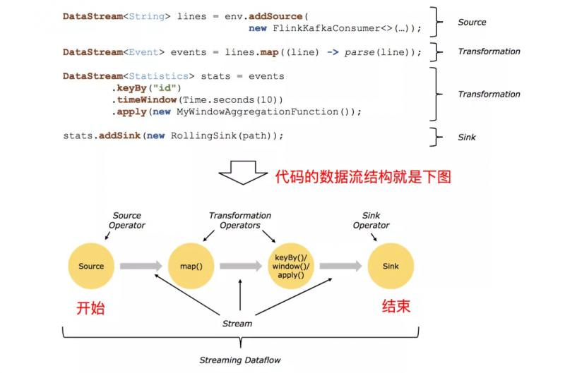

Flink入门（四）——编程模型原文出处:本文由博客园博主独孤风提供。
原文连接:https://www.cnblogs.com/tree1123/p/12048017.html
flink是一款开源的大数据流式处理框架，他可以同时批处理和流处理，具有容错性、高吞吐、低延迟等优势，本文简述flink的编程模型。
数据集类型：
- 无穷数据集：无穷的持续集成的数据集合
- 有界数据集：有限不会改变的数据集合
常见的无穷数据集有：
- 用户与客户端的实时交互数据
- 应用实时产生的日志
- 金融市场的实时交易记录
- …
数据运算模型有哪些呢？
- 流式：只要数据一直在生产，计算就持续地运行
- 批处理：在预先定义的时间内运行计算，当完成时候释放计算机资源
Flink它可以处理有界的数据集，也可以处理无界的数据集，它可以流式的处理数据，也可以批量的处理数据。
Flink是什么？




从下至上：
1、部署：Flink 支持本地运行、能在独立集群或者在被 YARN 或 Mesos 管理的集群上运行， 也能部署在云上。
2、运行：Flink 的核心是分布式流式数据引擎，意味着数据以一次一个事件的形式被处理。
3、API：DataStream、DataSet、Table、SQL API。
4、扩展库：Flink 还包括用于复杂事件处理，机器学习，图形处理和 Apache Storm 兼容性的专用代码库。
Flink 数据流编程模型
抽象级别
Flink提供了不同的抽象级别以开发流式或者批处理应用

最底层提供了有状态流，它将通过过程函数嵌入到DataStream API中，它允许用户可以自由地处理来自一个或者多个流数据的事件，并使用一致、容错的状态。除此之外，用户可以注册事件时间和处理事件回调，从而使程序可以实现复杂的计算。
DataStream / DataSet API 是 Flink 提供的核心 API ，DataSet 处理有界的数据集，DataStream 处理有界或者无界的数据流。用户可以通过各种方法（map / flatmap / window / keyby / sum / max / min / avg / join 等）将数据进行转换 / 计算。
Table API 是以 表 为中心的声明式 DSL，其中表可能会动态变化（在表达流数据时）。Table API 提供了例如 select、project、join、group-by、aggregate 等操作，使用起来却更加简洁（代码量更少）。
你可以在表与 DataStream/DataSet 之间无缝切换，也允许程序将 Table API 与 DataStream 以及 DataSet 混合使用。
- Flink 提供的最高层级的抽象是 SQL 。这一层抽象在语法与表达能力上与 Table API 类似，但是是以 SQL查询表达式的形式表现程序。SQL 抽象与 Table API 交互密切，同时 SQL 查询可以直接在 Table API 定义的表上执行。
Flink 程序与数据流结构

Flink 应用程序结构就是如上图所示：
- Source: 数据源，Flink 在流处理和批处理上的 source 大概有 4 类：基于本地集合的 source、基于文件的 source、基于网络套接字的 source、自定义的 source。自定义的 source 常见的有 Apache kafka、Amazon Kinesis Streams、RabbitMQ、Twitter Streaming API、Apache NiFi 等，当然你也可以定义自己的 source。
- Transformation：数据转换的各种操作，有 Map / FlatMap / Filter / KeyBy / Reduce / Fold / Aggregations / Window / WindowAll / Union / Window join / Split / Select / Project 等，操作很多，可以将数据转换计算成你想要的数据。
- Sink：接收器，Flink 将转换计算后的数据发送的地点 ，你可能需要存储下来，Flink 常见的 Sink 大概有如下几类：写入文件、打印出来、写入 socket 、自定义的 sink 。自定义的 sink 常见的有 Apache kafka、RabbitMQ、MySQL、ElasticSearch、Apache Cassandra、Hadoop FileSystem 等，同理你也可以定义自己的 sink。
Flink系列文章：
Flink入门（一）——Apache Flink介绍
Flink入门（二）——Flink架构介绍
Flink入门（三）——环境与部署
更多实时计算,Flink,Kafka等相关技术博文，欢迎关注实时流式计算